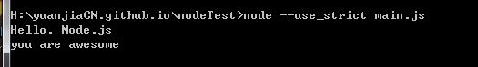

0.fs模块
Node.js内置的fs模块就是文件系统模块，负责读写文件。
和所有其它JavaScript模块不同的是，fs模块同时提供了异步和同步的方法。
回顾一下什么是异步方法。因为JavaScript的单线程模型，执行IO操作时，JavaScript代码无需等待，而是传入回调函数后，继续执行后续JavaScript代码。比如jQuery提供的getJSON()操作：
$.getJSON('http://example.com/ajax', function (data) {
console.log('IO结果返回后执行...');
});
console.log('不等待IO结果直接执行后续代码...');
而同步的IO操作则需要等待函数返回：
// 根据网络耗时，函数将执行几十毫秒~几秒不等:
var data = getJSONSync('http://example.com/ajax');
同步操作的好处是代码简单，缺点是程序将等待IO操作，在等待时间内，无法响应其它任何事件。而异步读取不用等待IO操作，但代码较麻烦。
readFile() 异步读取文件：
var fs = require("fs");
fs.readFile("sample.txt", "utf-8", function (err,data) {
if(err){
console.log(err);
}else{
console.log(data);
}
});
命令：
node --use_strict main.js
Hello, Node.js
you are awesome
注意！！！use_strict之前不可以有空格，不然会报错、node之后--之前必须有空格，不然也会报错！
然后读取一个并不存在的文件试试
var fs = require("fs");
fs.readFile("unexist.txt", "utf-8", function (err,data) {
if(err){
console.log(err);
}else{
console.log(data);
}
});
读取一个二进制文件
var fs = require("fs");
fs.readFile("sample.jpg",function (err,data) {
if(err){
console.log(err);
} else {
console.log(data);
console.log(data.length + "bytes");
}
});
当读取二进制文件时，不传入文件编码时，回调函数的data参数将返回一个Buffer对象。在Node.js中，Buffer对象就是一个包含零个或任意个字节的数组（注意和Array不同）。
buffer对象
Buffer对象可以和String作转换，例如，把一个Buffer对象转换成String：
// Buffer -> Stringvar text = data.toString('utf-8');
console.log(text);
或者把一个String转换成Buffer：
// String -> Buffervar buf = Buffer.from(text, 'utf-8');
console.log(buf);

建议不要这么做！！！buffer转string后,直接程序无响应了。。。电脑还发出滴滴滴的声音我的妈
readFileSync()同步读文件
除了标准的异步读取模式外，fs也提供相应的同步读取函数。同步读取的函数和异步函数相比，多了一个Sync后缀，并且不接收回调函数，函数直接返回结果。
用fs模块同步读取一个文本文件的代码如下：
var fs = require("fs");
var data = fs.readFileSync("sample.txt","utf-8");
console.log(data);
写文件将数据写入文件是通过fs.writeFile()实现的：
writeFile()
writeFile()的参数依次为文件名、数据和回调函数。如果传入的数据是String，默认按UTF-8编码写入文本文件，如果传入的参数是Buffer，则写入的是二进制文件。回调函数由于只关心成功与否，因此只需要一个err参数。
var fs = require("fs");
var data = "Hello, Node.js";
fs.writeFile("output.txt", data, function (err) {
if(err){
console.log(err);
} else {
console.log("ok");
}
})
本来没有这个output.txt也可以，这段程序会自动生成一个。 执行很多次也只会有一条hello, node.js，不会有很多句hello, node.js 不论本来这文件里有什么，都会被覆盖为hello, node.js
wirteFileSync()
和readFile()类似，writeFile()也有一个同步方法，叫writeFileSync()：
var fs = require("fs");
var data = "Hello, Node.js";
fs.writeFileSync("output1.txt", data);
stat
如果我们要获取文件大小，创建时间等信息，可以使用fs.stat()，它返回一个Stat对象，能告诉我们文件或目录的详细信息：
'use strict';
var fs = require('fs');
fs.stat('sample.txt', function (err, stat) {
if (err) {
console.log(err);
} else {
// 是否是文件:
console.log('isFile: ' + stat.isFile());
// 是否是目录:
console.log('isDirectory: ' + stat.isDirectory());
if (stat.isFile()) {
// 文件大小:
console.log('size: ' + stat.size);
// 创建时间, Date对象:
console.log('birth time: ' + stat.birthtime);
// 修改时间, Date对象:
console.log('modified time: ' + stat.mtime);
}
}
});
statSync()
stat()也有一个对应的同步函数statSync()
var fs = require("fs");
var txt = fs.statSync("sample.txt").size;
console.log(txt);//31
1.异步还是同步
在fs模块中，提供同步方法是为了方便使用。那我们到底是应该用异步方法还是同步方法呢？
由于Node环境执行的JavaScript代码是服务器端代码，所以，绝大部分需要在服务器运行期反复执行业务逻辑的代码，必须使用异步代码，否则，同步代码在执行时期，服务器将停止响应，因为JavaScript只有一个执行线程。
服务器启动时如果需要读取配置文件，或者结束时需要写入到状态文件时，可以使用同步代码，因为这些代码只在启动和结束时执行一次，不影响服务器正常运行时的异步执行。